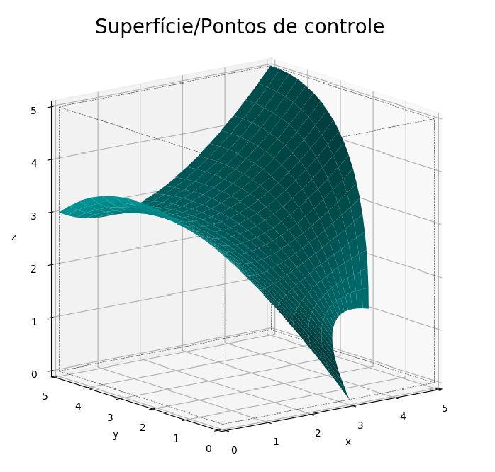

Funções e Respectivas Instruções¶
O usuário recebe nessa página todas informações dos argumentos de todas as funções presentes no código:
-
creating_solid.berstein(n_p)¶ Matemática chave por trás das curvas/superfÃcies de Bézier, dentro da própria função
gen_bezi().- Parameters
n_p (
int) – Não há necessidade alguma de manipulação por parte do usuário.
-
creating_solid.cria_matriz_pontos(desvio=False)¶ AuxÃlio na hora de setar os pontos necessários para as equações da função
gen_bezi().- Parameters
desvio (
Bool, optional) – Sete comoTruecaso queira que a superfÃcie passe pelos pontos de controle (pontos intermediários, os que normalmente dão a curvatura suave à superfÃcie). Baseia-se num artifÃcio matemático que hackeia a Bézier, forçando-a a fazer algo que normalmente não faria.
Warning
desvio=Truenão demonstrará efeito em todos os casos!O parâmetro pode ficar setado como True sem danificar o código, porém só efetivamente desviará a superfÃcie caso
n_pontos_u=3ao mesmo tempo quen_pontos_v=2ou vice-versa.O porquê da restrição:
Como pode-se imaginar, não há necessidade de desviar a superfÃcie para passar em pontos intermediários caso existam apenas 2 pontos na direção
[u,v]pois não há pontos intermediários. Também, caso a superfÃcie tenha 3 pontos em cada direção[u,v]ou mais, torna-se matematicamente complicado descrever o desvio.
-
creating_solid.gen_bezi(identif, nome, show_equation=False)¶ As equações de Bézier são governadas pelos parâmetros
ueve fornecem leis para curvas/superfÃcies.São definidas por pontos arbitrados pelo usuário, tendo um mÃnimo de 2 em cada direção
[u,v]e sem algum máximo pré-determinado.Os pontos iniciais e finais determinam onde a curva começa e termina, obviamente. São os únicos pontos por onde a Bézier (naturalmente) passará com certeza. Os pontos intermediários estão encarregados de fornecer à Bézier uma curvatura suave, sem canto vivo/descontinuidade, portanto a curva/superfÃcie nunca encosta neles.
Como o grau das equações é definido por
número de pontos definidos pelo usuário - 1, recomenda-se usar no máximo 3 pontos em cada direção, para que assim os cálculos se tornem baratos e viáveis. Caso um objeto seja extremamente complexo, recomenda-se dividÃ-lo em várias superfÃcies de grau 2.- Parameters
identif (
str) – Crie a identificação da sua superfÃcie com'n', onden=0,1,2,3...(começar em ‘0’ e somar ‘1’ a cada nova superfÃcie).nome (
str) – Crie um nome para a superfÃcie. Não há regras.show_equations (
Bool, optional) – Sete comoTruecaso queira visualizar as equações governantes da superfÃcie em questão.
Warning
identif()necessita atenção especial: o usuário voltará a chamar o parâmetro por diversas vezes ao decorrer do código.É importante frisar que, caso construÃda uma superfÃcie muito complexa (com variações não lineares entre os pontos em mais de 2 direções
xyz, uma superfÃcie muito torcida), a convergência das equações não é garantida - por enquanto.A superfÃcie ao lado possui seguintes equações:
x(𝑢,𝑣)=4.0𝑢²−2.0𝑢+𝑣²(3.0𝑢2−6.0𝑢+3.0)+𝑣(−6.0𝑢²+12.0𝑢−6.0)+3.0 y(𝑢,𝑣)=2.0𝑢²+𝑣²(2.0𝑢2+1.0)+𝑣(4.0−4.0𝑢²) z(𝑢,𝑣)=−3.0𝑢²+4.0𝑢+𝑣²(−11.0𝑢²+14.0𝑢−7.0)+𝑣(18.0𝑢²−20.0𝑢+10.0)
Evidentemente, são equações longas, não lineares e dependentes de mais de uma variável. O solver não se dá muito bem com isso. Maiores dúvida sobre convergência consultar a função
previa_interseccao().
{kind=link}
-
creating_solid.gen_bezi_cylinder(bases_plane, radius, center_1, center_2, init_height, final_height, identif_inicial)¶ Uma função derivada de
gen_bezi()que facilita a criação de cilÃndros. De saÃda são geradas 4 Béziers diferentes que juntas formam um cilÃndro. Caso esta função seja chamada, no momento de solução da Epsi será necessário usar a funçãogen_epsi_cylinder().- Parameters
bases_plane (
str) – Defina o plano paralelo à base. Pode assumir'xy','xz','zy'.radius (
float) – Defina o raio do cilÃndro.center_1 (
float) – Coordenada do eixo correspondente à primeira letra dobases_plane.center_2 (
float) – Coordenada do eixo correspondente à segunda letra dobases_plane.init_height (
float) – Altura da base inferior do cilÃndro.final_height (
float) – Altura da base superior do cilÃndro.identif_inicial (
str) – O mesmoidentifdo resto do código. O usuário deverá criar apenas a identificação da primeira das quatro Béziers geradas na função. Todas as outras identificações são definidas automaticamente.
- Exemplo:
Para criar um cilÃndro de raio 1 e altura 2 no plano
xzcaso alguma superfÃcie já tenha sido criada e identificada comidentif='0':gen_bezi_cylinder(bases_plane='xz',radius=1, center_1=3, center_2=3 init_height=2,final_height=4, identif_inicial='1')
Warning
Como já descrito, são geradas 4 Béziers nesta função. Portanto, caso haja alguma geração de Bézier depois dessa em questão, o argumento
identifdeverá ser igual ao desta função somadas mais 4 unidades. No exemplo descrito logo acima, o próximoidentif, quaisquer que seja, deveria ser'5'.
-
creating_solid.gen_epsi(tipo, plano, identif, simetria='global', raf0='normal')¶ Nesta função, usamos as equações geradas pelos pontos fornecidos pelo usuário para setar os limites de onde é sólido (na Epsi,
1) e onde não é sólido (na Epsi,0). Vamos setar o que é considerado entrada e saÃda, ou ambos ao mesmo tempo, para todas as superfÃcies criadas. Vamos, também, tornar mais barata o cálculo de nossa Epsi com simetrias. Vamos definir qual o melhor plano para calcular os limites.Preste atenção. Se algo pode dar errado, é aqui.
- Parameters
tipo (
str) –Defina se a superfÃcie em questão é considerada uma entrada, uma saÃda ou ambos em relação ao sólido.
Tipo
Sete
tipocomoEntrada Pura
'entrada+saÃda e/ou entrada'SaÃda Pura
'entrada+saÃda e/ou saÃda'Entrada/SaÃda Pura
Tanto faz
Entrada/SaÃda + Entrada
'entrada+saÃda e/ou entrada'Entrada/SaÃda + SaÃda
'entrada+saÃda e/ou saÃda'plano (
str) – Escolha o melhor plano para resolver sua superfÃcie. Caso o plano xy seja o melhor, setarplano='xy'. Pode assumir apenas'xz','xy','zy'.identif (
str) – Repita o argumentoidentifda superfÃcie em questão.simetria (
str, optional) – Defina alguma simetria de auxÃlio para barateamento do cálculo da Epsi. Pode assumir'simetria_x','simetria_y',simetria_z'. Caso utilize este termo, projete apenas metade das superfÃcies caso elas cruzem o eixo de simetria. Caso contrário, o método não resulta em ganhos significativos.raf0 (
str, optional) – Não há necessidade alguma de manipulação por parte do usuário.
- Exemplo:

Podemos notar 2 supefÃcies na figura, uma verde (
identif='0') e outra roxa (identif='1'). De acordo com esta situação, a invocação da funçãogen_epsi()pode se dar na seguinte forma:gen_epsi('entrada+saÃda e/ou entrada','zy','0') gen_epsi('entrada+saÃda e/ou saÃda','zy','1')
Podemos notar também um ponto que é o inÃcio de um vetor perpendicular ao plano ‘zy’. Este vetor é a representação do que define o
tipode cada superfÃcie. Toda vez que o vetor encontrar alguma superfÃcies, será definido um limite para a criação da Epsi. Devemos imaginar que para cada combinação de coordenada ‘z’ e ‘y’ (espaçamento definido por dz e dy) um vetor desses é originado. Portanto:1. O sólido verde é considerado Entrada Pura pois, no instante em que é interceptado pelos vetores, entra-se no sólido.
2. O sólido roxo deve ser dividido em 2 partes e é considerado Entrada/SaÃda + SaÃda. A primeira parte é a superior, logo acima da superfÃcie verde. Toda esta parte será interceptada pelos vetores duas vezes e por isso é considerada entrada/saÃda. A segunda parte é a inferior, que ‘compartilha’ altura com a superfÃcie verde. Esta parte será interceptada pelos vetores apenas uma vez e em todas elas o sólido já terá acabado, por isso é considerada também como saÃda.
Warning
Caso construÃda uma superfÃcie que possua segmentos com possÃveis entradas/saÃdas simultâneas (superfÃcie roxa), certificar que a superfÃcie seja construÃda no sentido positivo: os pontos iniciais devem ser mais próximos da origem do que os pontos finais, independente do plano.
Warning
Caso a superfÃcie identificada com
identifseja entrada, a partir do momento em que a Epsi encontrar a superfÃcie até o fim da Epsi será setado como 1. Caso seja saÃda, a partir do momento em que a Epsi encontrar a superfÃcie até o fim da Epsi será setado como 0.É necessário perceber que a ordem com que essa função é chamada tem muita importância: caso o usuário chame primeiro as saÃdas, o código vai entender que a partir do encontro da superfÃcie é necessário marcar como 0 algo que já está setado como 0 (a matriz Epsi é setada inicialmente apemas com 0, com dimensões nx, ny e nz). Seguindo a lógica, o usuário agora então chamaria as entradas. A partir do encontro da superfÃcie, tudo será setado com 1 até o fim da matriz e assim ficará definido. Ou seja, o sólido não foi representado corretamente.
Warning
Explicando ‘plano’ mais uma vez:
Para cada combinação de coordenada (xy, xz ou zy), imagine um vetor saÃndo de cada nó existente. Como por exemplo, falaremos do plano xy. De cada posição x e de cada posição y possÃvel, sairá um vetor em direção à z. Toda vez que esse vetor cruzar uma superfÃcie, será contabilizado um limite para a Epsi. O usuário já determinou que tipo de limite será no argumento anterior. Logo, é de extrema importância que o usuário escolha o plano certo para resolver o seu sólido. Imagine outro exemplo, onde o usuário construiu um quadrado no plano xy (ou seja, paralelo ao plano xy), com alguma altura constante qualquer. Esse quadrado não possui dimensão alguma para qualquer plano a não ser o plano xy. Em outras palavras, o plano zy e o plano zx nunca cruzarão este quadrado, logo a Epsi não será construÃda corretamente pois não haverá limite algum para isso. E isso é perfeitamente demonstrado pela a função
previa_interseccao(). Inclusive, o retorno desta função explicita onde há interceptação dos vetores com a superfÃcie, tornando mais clara a escolha deste argumento.
-
creating_solid.gen_epsi_cylinder(bases_plane, tipo, plano, identif_inicial, simetria='global', raf0='normal')¶ Uma função derivada de
gen_epsi()que facilita a geração da Epsi de cilÃndros criados com a funçãogen_bezi_cylinder().- Parameters
bases_plane (
str) – Pode assumir'xy','xz','zy'. Deverá ser igual ao definido para o cilÃndro em questão na funçãogen_bezi_cylinder().tipo (
str) – Defina se a superfÃcie em questão é considerada um'contorno'(imagine posicionar um cilÃndro dentro de um cubo e subtraÃ-lo, como se fosse uma tubulação) ou um'sólido'(ideal para pneus, rodas, etc). A variável só pode assumir os dois termos destacados.plano (
str) – Escolha o melhor plano para resolver sua superfÃcie. Pode assumir apenas'xz','xy','zy'. Mais informações emgen_epsi().identif_inicial (
str) – O mesmoidentifsetado para o cilÃndro em questão na funçãogen_bezi_cylinder().simetria (
str, optional) – Pode assumir'simetria_x','simetria_y',simetria_z'. Mais informações emgen_epsi().raf0 (
str, optional) – Não há necessidade alguma de manipulação por parte do usuário.
-
creating_solid.gen_output(names, raf2='normal')¶ Geraração do arquivo que torna possÃvel a visualização no ParaView da Epsi.
- Parameters
names (
str) – Entre com o nome que será dado aos arquivos gerado pelo programa.raf2 (
str) – Não há necessidade alguma de manipulação por parte do usuário.
-
creating_solid.gen_raf_epsi(nraf)¶ Geração da Epsi refinada, importante arquivo para o
Incompact3d. O objetivo é obter maior precisão em cada dimensão por vez.- Parameters
nraf (
int) – Entre com o número de vezes que gostaria de multiplicar os nós (refinar a malha).
-
creating_solid.plot_epsi(direcao, grid=True, integral=False, raf1='normal')¶ Confira se os limites estão corretos, camada por camada ou por amostragem, em qualquer direção.
- Parameters
direcao (
str) – Poderá assumir os seguintes valores:'x', 'y', 'z'.grid (
Bool, optional) – Caso houver número demasiado de nós (>250), setar comoFalseauxiliará na visualização.integral (
Bool, optional) – Se o usuário quiser conferir meticulosamente todas as camadas, sete comoTrue.raf1 (
str, optional) – Se o usuário quiser conferir alguma Epsi Refinada, setar com'x','y','z'.
-
creating_solid.plota_superficie(identif_inicial, identif_final, pontos=False, alpha=0.3)¶ - Parameters
identif_inicial (
str) – Determine o inÃcio do intervalo de superfÃcies a serem plotadas através da identificaçãoidentif.identif_final (
str) – Determine o final do intervalo (endpoint não incluido) de superfÃcies a serem plotadas através da identificaçãoidentifpontos (
Bool, optional) – Caso queira visualizar os pontos que governam sua superfÃcie, sete comoTrue.alpha (
float, optional) – Controlador da opacidade da superfÃcie em questão. Pode assumir qualquer valor entre0(transparente) e1(opaco).
-
creating_solid.prepara_matriz_pontos(pontos_u, pontos_v)¶ Importante função em que o usuário determinará o número de pontos em cada direção
[u,v].Caso fique em dúvida da nomenclatura de quais pontos serão necessários setar, execute uma célula (após executar a função em pauta) com
print(armz_pt):#exemplo de como tirar a dúvida dos pontos que devem receber algum input prepara_matriz_pontos(3,3) print(armz_pt)
Basicamente, os pontos a serem determinados possuem 2 sub-Ãndices:
iej→Pij.Os sub-Ãndices começarão em
0e irão atéi-1e/ouj-1.- Parameters
pontos_u (
int) – Determine o número de pontos que a direçãouterá.pontos_v (
int) – Determine o número de pontos que a direçãovterá.
- Exemplo:
Será explicitado quais pontos deverão ser setados de acordo com as entradas:
prepara_matriz_pontos(3,2) #função é chamada armz_pt['P00'] = [x,y,z] #declara-se as informações do ponto armz_pt['P01'] = [x,y,z] #qualquer ponto de 3 coordenadas dentro do domÃnio armz_pt['P10'] = [x,y,z] armz_pt['P11'] = [x,y,z] armz_pt['P20'] = [x,y,z] armz_pt['P21'] = [x,y,z]
Note que o primeiro subÃndice,
i, começa em0e termina em2, que é o correspondente apontos_u=3-pontos_v=1.O dicionário
armz_ptfaz parte da mecânica do código, não deve ser alterado. Auxilia na setagem e no armazenamento das informações.
-
creating_solid.previa_intersecçao(identif_inicial, identif_final)¶ Uma mini simulação de Epsi. Para poucos nós em cada direção será checado se os limites são coerentes ou não, ou seja, se as funções convergiram para o determinado espaçamento de nós ou não. Cada ponto no gráfico significa uma intersecção entre o vetor e a superfÃcie. Se todos forem razoáveis, a superfÃcie será bem entendida pelo solver.
- Parameters
identif_inicial (
str) – Determine o inÃcio do intervalo de superfÃcies a serem calculadas através da identificaçãoidentif.identif_final (
str) – Determine o final do intervalo (endpoint não incluido) de superfÃcies a serem calcuadas através da identificaçãoidentif.
-
creating_solid.transladar(direcao, quantidade)¶ Caso tenha se precipitado em relação à posição de sua superfÃcie, translade seus pontos de forma eficiente em qualquer direção.
- Parameters
direcao (
str) – Defina em qual direção a translação será feita. Deve assumir'x', 'y', 'z'.quantidade (
int) – Assume quantas unidades de comprimento de domÃnio o usuário quer transladar sua superfÃcie.
Warning
Deverá ser obrigatoriamente chamada entre a função
cria_matriz_pontos()e a funçãogen_bezi().Exemplo:
prepara_matriz_pontos(2,2) armz_pt['P00'] = [x,y,z] armz_pt['P01'] = [x,y,z] armz_pt['P10'] = [x,y,z] armz_pt['P11'] = [x,y,z] cria_matriz_pontos() transladar('y',1.5) transladar('x',-0.5) gen_bezi('0',capô)